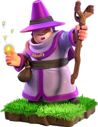

Apprentice Warden — Clash of Clans
Updated: 26 August 2026 · By the Goblins Farm team
The Apprentice Warden brings a scaled-down version of the Grand Warden's support to the rest of your army, which matters because the Warden himself can only be in one place at a time.
- Housing space
- 20
- Levels
- 4
- Trained in
- Dark Barracks
- Targets
- Ground and air
- Attack speed
- 0.9s
- Range
- 5 tiles
What it does
It provides a support effect to nearby friendly troops, functioning as a mobile buff rather than a damage dealer. In practice it lets a second group of troops operate with support while the actual Grand Warden covers the main push.
How to use it
Split your support coverage.
- Attach one to a secondary push so both halves of your army have support rather than only the one the Warden is with.
- Keep it behind the front line. It is a support unit and dies quickly if it walks into defensive fire.
- Value scales with the group. An Apprentice Warden supporting two troops is wasted; supporting a full push is excellent.
How to beat it
Kill it, which means splash damage reaching the second rank of an attacking army rather than only the front. Because it is a support unit with modest hitpoints, defences that damage the whole group rather than the leading tank remove it quickly.
Stats by level
| Level | Hitpoints | DPS | Research cost | Research time | Town Hall |
|---|---|---|---|---|---|
| 1 | 1,500 | 170 | — | — | 13 |
| 2 | 1,650 | 185 | 90,000 Dark Elixir | 6 d | 13 |
| 3 | 1,800 | 200 | 135,000 Dark Elixir | 7 d 12 h | 14 |
| 4 | 1,950 | 215 | 160,000 Dark Elixir | 8 d | 15 |
Where these numbers come from. Read from Clash of Clans' own game files, client build 18.400.21. They are exact for that build and do not reflect anything released after it, so verify in game before committing an upgrade.
Game values are read from Supercell's own game files, reproduced as fan content under Supercell's Fan Content Policy. Goblins Farm is not affiliated with, endorsed, sponsored, or specifically approved by Supercell, and Supercell is not responsible for it.
Frequently asked
What does the Apprentice Warden do?
It provides a smaller version of the Grand Warden's support effect to nearby troops, which lets you give a second group of your army support while the Grand Warden himself covers the main push.
Where should I deploy an Apprentice Warden?
Behind the front line of a secondary push, where it covers a full group of troops. Its value scales with how many troops are inside its support radius, so attaching it to a small group wastes it.
Keep reading
Goblins Farm is not affiliated with, endorsed by, sponsored by, or specifically approved by Supercell. Clash of Clans is a trademark of Supercell Oy. This material is unofficial fan content produced under Supercell's Fan Content Policy. Game values change with every update; always verify in-game before committing an upgrade.